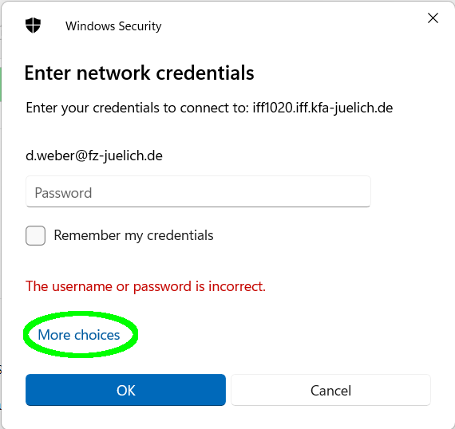
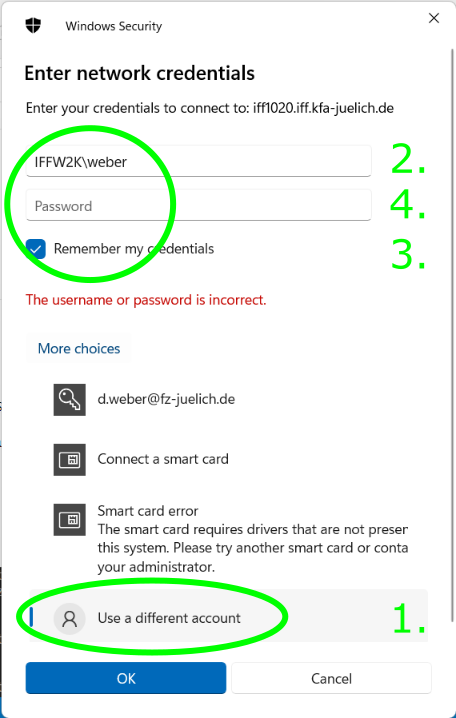

ER-C Data Management
ER-C Data Management
ER-C-Data / Overview
About
This system stores data for the Ernst Ruska-Centre at Forschungszentrum Jülich. It can handle large-scale data with sufficient performance and allows access from microscopes, PCs, processing workstations and mobile devices for institute members and collaborators.
Management
Manage projects, sessions, ingest and access permissions (VPN/Intranet)
Nextcloud
Syncronize, collaborate, ingest data via Nextcloud
Network Filesystem
Directly access files from your favourite programs via network filesystems (VPN/Intranet)
Jupyter Notebooks
Analyze and process data with Jupyter notebooks (VPN/Intranet)
File Transfer
Use standard tools like scp or
rsync to transfer data in or out
Ingest Data
Use our Ingest GUI to store your session's data from the microscopes
Synchronize locally
Install and connect a native Nextcloud client
Large datasets
Transfer large folders or files
Report an issue
Contact admins or use the Issue tracker
Using the data management system
The system can be accessed with the IFF login credentials. See the Scientific IT Systems page of PGI-JCNS-TA for more information.
Please contact the admins if you are planning to use more than 50 GB in a project. This is very well possible, there should just be a clear scientific value proposition and a way to cover the cost.
Install a native Nextcloud client
You can download and install the native Nextcloud client for your device. Then choose "Log in to your Nextcloud" and enter https://er-c-data.fz-juelich.de/nextcloud/ as your server address. If you already have the client installed and connected to a cloud server, you can add an additional account.
Please note that federation is not supported yet and may not work reliably.
Access via network file systems
Your data is made available as a network share:
\\er-c-data-smb.fz-juelich.de\er-c-data\ (Windows) or smb://er-c-data-smb.fz-juelich.de/er-c-data/
(Linux, Mac OS X, other operating systems). FZ Jülich intranet/VPN only. When Windows prompts for credentials,
first select "More choices...", then "Use a different account", and enter IFFW2K\<your username>

\\er-c-data-smb.fz-juelich.de\er-c-data

IFFW2K
Windows domain with your IFF user name. Optionally, you can save the credentials.
On the following Linux servers, your data is also available via NFS,
mounted at /storage/er-c-data/:
- iff588 (moellenstedt)
Please contact us if you would like to create a fast direct connection to other data processing servers!
Jupyter notebooks
JupyterHub is available on the following hosts:
Your notebooks can access your data at /storage/er-c-data/ - if you want to run notebooks stored
in the data management system, you need to create a link as documented in our FAQ.
File Transfer
As documented above, your data is
available on
moellenstedt.iff.kfa-juelich.de:/storage/er-c-data/ - that
means you can connect via standard file transfer tools (rsync,
scp, sftp;
GUIs like WinSCP or
Cyberduck) to this
host to transfer data in both directions. Direct use
via the network share or NFS may give
better performance. Choosing a fast cipher and disabling compression can
speed up transfers tremendously over fast network: Try "-c
aes128-ctr -o Compression=no" as options with SSH-based tools.
Large files or folders
Using Nextcloud to handle large files or folders with many files can be slow and may lead to timeouts or other errors. Direct file system access is faster, in particular for many small files. Tools like rsync allow to resume an aborted transfer, which is particularly advantageous for very large amounts of data or transfer over unreliable network.
Ingest GUI
From the microscope PCs, you can use the data ingest GUI to upload your experimental data. In the future, the UI will be properly documented here.
Directory Structure
In short:
- /storage/er-c-data/ — the root of the storage system
- /storage/er-c-data/project-name/ — location for long-term projects
- /storage/er-c-data/adhoc/ — location for user-created projects
- /storage/er-c-data/adhoc/project-name/session-name/ — a session inside of a project
- /storage/er-c-data/adhoc/project-name/session-name/raw/ — raw experimental data
At the top level will be long-lived projects that are managed via Unix group
membership, which is administrated by PGI-JCNS-PA. This is not implemented yet, but will be
available soon. In the folder /adhoc you find user-created projects that are
not dependent on Unix group membership. Any user can create and manage such projects
through the management
interface. In the folder archive you will find projects that are no longer
active. Projects can be archived by admins on request.
Within a project you can create data acquisition sessions using the ingest
client on the microscopes or the management interface. They are subfolders of a project that
contain a raw subfolder. That raw folder and its contents will be sealed, i.e. set
immutable, once such a session is closed. Under the hood they are just folders,
which means they can be created through other means, too. Sealing can only be
performed through the management interface or by admins.
For the time being, sessions can only be created top-level within a project. It is planned to allow creating sessions at any place within a project at some point. Please contact the admins if creating sessions in other places is important to you so that this is prioritized accordingly!
Other than that, users are free to manage data in a project as they see fit. It is simply a folder structure in a Unix file system.
FAQ
How do I make the files in the data management system available in my JupyterHub tree?
By default, the tree shown by JupyterHub only contains a user's home
directory. To make data accessible that is outside a user's directory tree, one
can create a soft link within the home directory to the desired location.
Running this command on a command line terminal on Möllenstedt creates the link
er-c-data top-level in the user's home that points to the data
location /storage/er-c-data:
ln -s /storage/er-c-data ~/er-c-data
Please note that the user home directory is shared between all machines with IFF
login, which means the link will only work if the target folder
/storage/er-c-data is available on a given machine.
Contact
You can report, check and discuss current issues in the Issue tracker on IFFgit. It is also used as a platform to develop the system further. You can access is with your IFF login.
Please contact Dieter Weber or Alexander Clausen for help and questions.
Architecture
At the core of the system is a Unix file system on
iff1020.iff.kfa-juelich.de. This machine doesn't allow login by users for
security reasons.
From iff1020 the data management is exported as NFS to selected
machines in an internal network, such as Möllenstedt, and as SMB (CIFS) within
the FZ Jülich intranet to allow direct connection from PCs.
er-c-data-smb.fz-juelich.de is currently an alias of
iff1020 that should be used for SMB access. The data is also made
available through Nextcloud using an internal WebDAV gateway and Nextcloud's
"external storage" feature.
For write access from microscope a dedicated ingest client and gateways is used. This provides a convenient way to write data with the correct ownership to the correct place within data management system, and seal data after closing a microscopy session.
Permissions
Access is controlled by the Unix file system mechanisms: Ownership, group ownership and membership, permission bits, ACLs, SGID bit and sticky bit. These permissions are enforced throughout the system. Users can modify these settings through the usual Unix tools on machines that mount the file system writable through NFS, such as Möllenstedt.
The management interface allows users to perform selected operations that require elevated privileges, namely creating projects and sealing sessions. It also provides an interface to perform some operations more conveniently, such as managing membership in adhoc projects.
Default file system permissions allow all project members to create files and folders everywhere within a project. Once created, files can only be modified by their owners. ER-C users can read all data within all projects by default. Admins or users can change this behavior using the usual Unix tools to manipulate file system permissions. The management interface can be extended on request to include additional operations, such as creating private projects.
Sealing is implemented through setting the Linux-specific "immutable" flag
for the desired files and folders on the host file system on iff1020. It is not
available through NFS, SMB or the WebDAV gateway, meaning it can't be overridden
on any client system. Admins can change it manually directly on the iff1020
system.
Quotas for storage space per project are not enforced yet, but will be implemented soon to ensure controlled and economic use of the available capacity.
Security
Valuable data should be set immutable through sealing or on request by admins to prevent deletion or modification. This is the strongest protection against user error and malicious software. Data that is not set to immutable is at elevated risk to be lost permanently. Please place raw data in the designated folder within a session so that it is sealed when the session is closed, or contact admins to set data immutable on request!
Data that is deleted or modified through Nextcloud might be available in the Nextcloud trash bin or in previous versions. Please note that only limited space is available for this and data may be purged automatically if the available space or a holding period of about 30 days is exceeded.
Furthermore, daily snapshots are available as backup at ITS for the last 7 days. Please contact admins as soon as possible if you'd like to restore data from backup!
Protection against unauthorized reading is comparatively weak: Achieving administrator privileges on a client that mounts the data through NFS gives full read access to all data and full write access to all data that is not immutable. This is not a hypothetical scenario since users can log in to Möllenstedt and may exploit unpatched local privilege escalation bugs that surface every now and then. Please contact the admins if any of your projects require data privacy or might be at an elevated risk.
Long-time archival, in particular for projects that are concluded, is in planning. Policies for this are under development. Valuable data that is elemental for publications should be published on Zenodo. This is often a requirement from scientific journals or funding bodies.